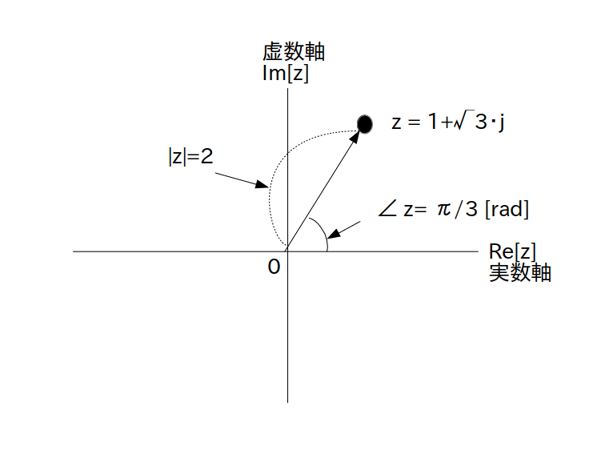

例: $z=1+j\cdot\sqrt{3}$ と $z^*=1-j\cdot\sqrt{3}$ は偏角の符号だけが異なる(絶対値は同じ)

ここまで複素数は実数軸の座標(実部)と虚数軸の座標(虚部)を使って表されていました。
このような複素数の位置を複素平面上の座標で表す方式を直交形式 (rectangular form、または orthogonal form)、あるいはデカルト形式(Cartesian form)といいます。
$a$ と $b$ が実数の時
\[ z = a + j \cdot b \]一方、複素数は複素平面上の点あるいはベクトルでしたので、以下の図 1 の様に原点から点までの距離と角度で複素数の位置を表すことも出来ます。
$z=1+j\cdot\sqrt{3}$ の位置
距離は絶対値$|z|$ そのものですが、角度は実数軸から反時計回りに測った値を使います(単位はラジアン)。
この角度の事を偏角 (argument of complex)と言って、図1 のように $\angle \ z$ と書いたり、arg $z$ と書いたり、あるいは $\phi$ や $\theta$ で表したりします。
このアクティビティでは特に指示が無い限り $z$ の偏角として $\angle \ z$ を使うことにします。
さて、$|z|$ と $\angle \ z$ を使って複素数を表現する方法を極形式 (polar form)、またはフェーザ形式、またはオイラー表現と言い、ネイピア数 e を使って次のように定義されます。
絶対値が $|z|$、偏角が $\angle \ z$ の時
\[ z = |z| \cdot \textrm{e}^{\{j\cdot \angle \ z\}} \]この極形式を初めて見た人は必ず戸惑います(何故いきなり e が出てくるのか？何故 e の指数に虚数単位 $j$ が入ってるのか？、etc.)
その辺を考え始めると訳が分からなくなりますが、とりあえず複素数をこのような極形式で表したことで物理学、信号処理、その他の様々な計算問題が簡単に解けるようになって人間社会が発展しました。
結局、極形式も様々な計算を楽にするための単なる道具ですので、深く考えず素直にそういう物なんだと思って下さい。
絶対値 $|z|$ は定義から 0 以上の実数と分かります。
一方、偏角 $\angle \ z$ は角度ですので$-\infty$ から $\infty$ までの実数値を取れますが、当然 360 度回転させるごとに複素数は全く同じ位置に戻ります。
そこで一般的には偏角の範囲を $-\pi$ から $\pi$ までに限定することが多いです。
この範囲を主値と呼びます。
虚部の符号が異なる複素数の組のことを複素共役といいましたが、虚部の符号が異なるということは偏角の符号が異なることを意味します(図2)。
例: $z=1+j\cdot\sqrt{3}$ と $z^*=1-j\cdot\sqrt{3}$ は偏角の符号だけが異なる(絶対値は同じ)
従って複素共役を極形式で表現すると次のようになります。
の複素共役 $z^*$ は
\[ z^* = |z| \cdot \textrm{e}^{\{-j\cdot \angle \ z\}} \]